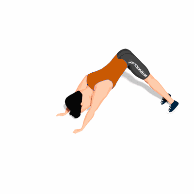

Flexão Hindu

Esse exercício muito usado em artes marciais que trabalha o fortalecimento dos músculos da região peitoral, tríceps e ombros.
Ficha Técnica
Tipo: Musculação
Grupo Muscular: Peito
Aparelho: Nenhum
Músculos: Nenhum
Como realizar
- Com a barriga pra baixo, assuma a posição de uma flexão convencional, mantendo a região abdominal contraída;
- Desça com o peito para baixo e simultaneamente traga-o para a frente, a desenhar uma trajetória curva;
- Estique a frente até que as pernas estejam totalmente alongadas;
- Realize o movimento contrário, dobrando as pernas o mínimo possível, retomando à posição inicial.
 RC STORE
RC STORE